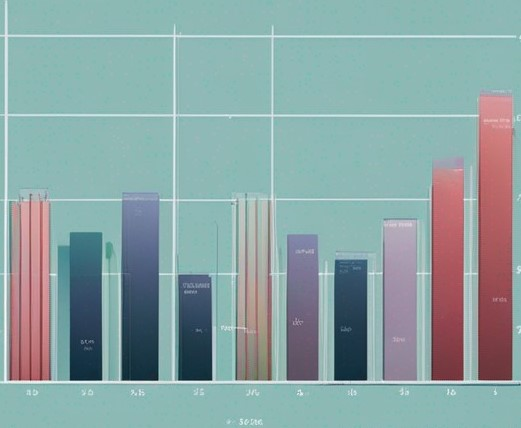

Home
Dashboard
Time Seies Analysis

In our sales data Time Series Analysis, we explore historical sales patterns, trends, and seasonality. This analysis empowers us to make informed decisions, optimize inventory, and enhance forecasting accuracy.
View Analytics